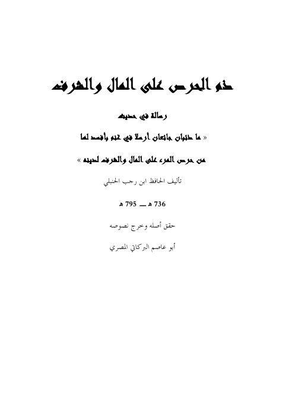

ذم الحرص على المال والشرف رسالة في حديث ماذئبان جائعان
Authors: ابن رجب الحنبلي
Editors: أبو عاصم البركاتي المصري
Download Downloads need an internet connection.
- Edition
- 1
- Volumes
- 1
- Pages
- 98
- Type
- كتاب
- Category
- الحديث وعلومه
- Subcategory
- بحوث حديثية
Description
**▫️ العنوان: ذم الحرص على المال والشرف رسالة في حديث ماذئبان جائعان** ▪️ المؤلف: #عبد_الرحمن_البغدادي_بن_رجب_الحنبلي ▫️ المحقق: #أبو_عاصم_البركاتي_المصري ▪️ الطبعة: 1 ▫️ عدد الأجزاء: 1 ▪️ الصفحات: 98 ▫️ نوع الوعاء: #كتاب ▪️ التصنيف الرئيسي: #الحديث_وعلومه ▫️ التصنيف الفرعي: #بحوث_حديثية ۪